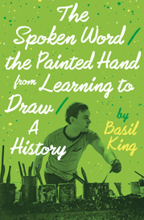

King Art and Writing
Basil King
Painter, Writer
After Klimt, 2007 ➤
Mixed media on Masonite
30 x 32 in.
from “Basil’s Arc”—a series of paintings honoring artists he loves.


The Spoken Word/The Painted Hand, Marsh Hawk Press, 2014, in Basil’s “Learning to Draw” sequence; Wreckage of Reason: Back to the Drawing Board, a recent anthology with Martha's prose.